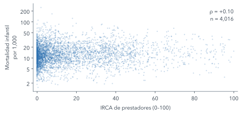
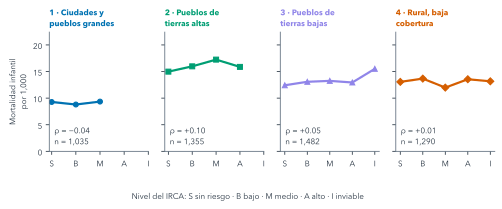

22 Correlación no es causalidad
Quarto, publicación reproducible, agentes de programación, Markdown, Python, EPUB, análisis de datos, k-means
El análisis se construyó para preguntar si los lugares con peor agua tienen peores resultados, y la tentación, una vez que hay un gráfico, es leer la respuesta como un efecto: el agua peor causa más muertes infantiles. Los datos no pueden sostener esa oración, y este capítulo muestra por qué, con los propios números del análisis.
Una comparación más, la asociación entre la calidad del agua y la mortalidad infantil dentro de cada tipo de lugar, sale débil en todos los tipos, y en uno tan grande como en todos juntos. Pero ni una asociación fuerte ni una débil podrían zanjar aquí la pregunta causal, y las razones deciden cómo hay que escribir los resultados. Esa última parte no es una formalidad: la oración que cita un lector es la que tú publicas.
- Explicar qué mide la ρ de Spearman, y leerla sobre todos los lugares y dentro de cada tipo.
- Explicar por qué comparar dentro de un clúster mantiene fijas la pobreza, lo rural y la cobertura solo en parte, y por qué los cuatro valores no se pueden ordenar.
- Nombrar los caminos que pueden crear o esconder una asociación aquí, y decir hacia dónde podría empujar cada uno.
- Escribir un resultado con verbos de asociación, las filas comparadas, sus límites y lo que no muestra.
22.1 ¿Peor agua, más muertes infantiles?
La medida es la \(\rho\) (rho) de Spearman, que pregunta si dos variables suben y bajan juntas en orden de rango: ordena los lugares según cada variable y mira si los dos órdenes coinciden. Va de −1 (perfectamente opuestas) a +1 (perfectamente juntas), pasando por 0, que significa que no hay ninguna relación monótona, una en la que una variable tiende a subir cuando la otra sube, aunque no necesariamente a lo largo de una línea recta. Como usa rangos, no se deja llevar por los valores extremos, lo que importa con las tasas ruidosas de los municipios pequeños.
Sobre todos los municipios-año con los dos valores en 2017–2019 y 2021–2023, la \(\rho\) entre el IRCA de prestadores y la mortalidad infantil es +0.10 (n = 4,016, la cantidad de municipios-año comparados). La Figura 22.1 muestra cómo se ve una asociación tan débil: una nube sin pendiente visible.

Una pequeña asociación positiva sobre todos los lugares podría venir del agua, o de todo lo que difiere entre los lugares con agua segura e insegura. Los clústeres ofrecen un control parcial, una forma de comparar lo comparable: dentro de un clúster, los lugares se parecen más en pobreza, en lo rural, en cobertura y en altitud que en todo el país, aunque lejos de ser iguales (Tabla 22.1).
| Característica | 1 | 2 | 3 | 4 |
|---|---|---|---|---|
| Pobreza | 0.53 | 0.47 | 0.75 | 0.87 |
| Proporción rural | 0.79 | 0.58 | 0.89 | 0.85 |
| Cobertura de acueducto | 0.80 | 0.35 | 0.46 | 0.88 |
| Altitud | 0.93 | 0.69 | 0.40 | 0.96 |
Cada valor está por debajo de 1, pero algunos apenas: dentro del clúster 4, la altitud varía casi tanto como en todas las zonas-año conservadas. Así que la comprobación repite la comparación dentro de cada clúster (Figura 22.2), donde algunas de las diferencias entre lugares son más pequeñas.

Dentro de los clústeres, la \(\rho\) va de −0.04 en el clúster 1 a +0.10 en el clúster 2, donde es tan grande como sobre todos los lugares (Tabla 22.2). Estas cifras no se pueden ordenar entre sí, ni poner al lado de la de todos los lugares, tal como están, por tres razones.
| n | ρ | Intervalo del 95% | DE del IRCA | |
|---|---|---|---|---|
| Todos los lugares | 4,016 | +0.10 | +0.06 a +0.14 | 20.1 |
| Clúster 1 | 1,035 | −0.04 | −0.11 a +0.05 | 8.5 |
| Clúster 2 | 1,355 | +0.10 | +0.03 a +0.16 | 11.9 |
| Clúster 3 | 1,482 | +0.05 | −0.01 a +0.12 | 22.9 |
| Clúster 4 | 1,290 | +0.01 | −0.06 a +0.07 | 31.1 |
La primera es el rango. Los clústeres se formaron en parte según el IRCA, así que dentro de los clústeres 1 y 2 varía mucho menos que sobre todos los lugares, y dentro de los clústeres 3 y 4, más. Un rango más estrecho tiende a debilitar una correlación de rangos, pero eso no explica estas cuatro: la \(\rho\) es más grande en el clúster 2, donde el IRCA varía poco, y más cercana a cero en el clúster 4, donde más varía.
La segunda es el azar. Para ver cuánto podría moverse la \(\rho\) con otra muestra de lugares, el libro vuelve a sacar los municipios de cada conjunto 1,000 veces, con reemplazo y manteniendo juntos los años de cada municipio, y recalcula la \(\rho\) cada vez; el 95% central de esos valores es el intervalo de la Tabla 22.2. El intervalo de cada clúster se extiende entre 0.06 y 0.08 a cada lado de su \(\rho\), más que las brechas entre valores vecinos, así que estos datos no pueden ordenar los cuatro. Los intervalos de los clústeres 1, 3 y 4 incluyen el cero; el de todos los lugares, no.
La tercera es la unidad, porque la unidad sigue a la variable de resultado. La mortalidad infantil se mide para todo el municipio, así que cada municipio-año cuenta una vez, con el IRCA medio de sus zonas: todas ellas para la cifra de todos los lugares, solo las del clúster para la de un clúster. Esa media no está ponderada, y cubre solo las zonas con puntaje: en el 54% de los municipios-año del conjunto completo, solo una zona tiene puntaje. Así que el IRCA al lado de una tasa es el puntaje de una zona o la media simple de dos, no lo que bebe el habitante promedio.
Sería fácil leer esto como “el agua no importa”. Esa lectura está tan poco sustentada como la primera.
Dentro del clúster 4, la \(\rho\) es cercana a cero. Escribe la oración que un concejal podría sacar equivocadamente de ella, y una honesta.
Equivocada: “En los lugares del tipo «rural, baja cobertura», la calidad del agua no hace ninguna diferencia en las muertes infantiles.” Honesta: “Dentro del tipo «rural, baja cobertura», los municipios-año con un IRCA de prestadores más alto no tuvieron una mortalidad infantil registrada notablemente más alta (2017–2019 y 2021–2023). Esto no muestra que el agua no tenga ningún efecto: el subregistro, las tasas vacías y el desajuste entre la zona y el municipio podrían esconder uno.”
22.2 Qué más podría explicarlo
La Figura 22.3 dibuja los caminos entre el agua y la mortalidad infantil que los datos no pueden separar.
![La pregunta es si el agua insegura aumenta la mortalidad infantil, una flecha discontinua de la calidad del agua a las muertes infantiles. Otros caminos conectan las dos. La pobreza y lo rural hacen el agua menos segura y también hacen más probables las muertes infantiles, una variable de confusión. La pobreza también limita el acceso a los servicios de salud, que afecta las muertes infantiles, y debilita la calidad del registro, que se interpone entre las muertes reales y las registradas: un registro débil esconde muertes, y las tasas vacías quedan fuera de los datos. Y el IRCA se mide por zona mientras que las muertes infantiles se miden por municipio, así que un patrón entre lugares no tiene por qué valer para las personas que viven en ellos.](../media/diagrams/confounders.svg)
La pobreza y lo rural son probables variables de confusión. Una variable de confusión es una tercera variable que afecta tanto a la exposición, aquí la calidad del agua, como a la variable de resultado, aquí las muertes infantiles, así que las dos se mueven juntas aunque una no tenga ningún efecto sobre la otra. Los lugares más pobres y más rurales tienden a tener agua menos segura y, por otras razones, más muertes infantiles, así que pueden producir una asociación entre el agua y la mortalidad sin ningún efecto del agua. El acceso a los servicios de salud lleva parte de ese camino: los lugares más pobres y más apartados tienen menos, y menos acceso significa más muertes infantiles.
La calidad del registro es un problema de medición, y funciona al revés: los lugares con un registro débil de nacimientos y defunciones registran menos muertes infantiles de las que ocurren, y si esos son también los lugares con agua insegura, el subregistro puede esconder un efecto real. Los vacíos agregan un segundo problema. La serie no tiene ceros, así que una tasa vacía puede significar que no se registró ninguna muerte, y el 32% de los municipios-año agrupados de estos años está vacío. Dejarlos fuera descarta lo que pueden ser ceros registrados, lo que sube sobre todo los promedios de los lugares pequeños: una selección según la propia variable de resultado (Sección 21.4).
Luego está el nivel ecológico. El IRCA se mide para una zona urbana o rural; la mortalidad infantil, para todo el municipio. Un patrón entre lugares no tiene por qué valer para las personas que viven en ellos: los bebés que murieron no tienen por qué ser los que bebían la peor agua. Sacar conclusiones individuales de datos agregados se conoce como la falacia ecológica.
Tunja muestra el desajuste en un solo lugar. En esta comprobación, cada uno de sus seis municipios-año cuenta una vez en el clúster 1, con el IRCA medio de sus dos zonas: en 2018, por ejemplo, 9.15, a mitad de camino entre el 0.5 de su agua urbana y el 17.8 de su agua rural, un valor que no tuvo ninguna de las dos zonas. La media pesa igual las dos zonas, aunque a lo sumo el 5% de la gente de Tunja vive en la rural, y la mortalidad infantil a su lado es la de todo el municipio.
Los clústeres achican algunas de estas diferencias sin eliminarlas: dentro de un clúster, los lugares siguen difiriendo en pobreza y en acceso (Tabla 22.1). Y los municipios pequeños producen tasas extremas, que agregan un ruido que aplana cualquier línea.
Elige uno de estos caminos. ¿Podría esconder un efecto real, o crear uno falso?
La pobreza puede crear uno falso: si los lugares más pobres tienden a tener a la vez agua menos segura y, por otras razones, más muertes infantiles, las dos se mueven juntas sin que el agua haga nada. La calidad del registro puede esconder uno real: si los lugares con agua insegura subregistran las muertes, sus tasas medidas son demasiado bajas, y un efecto real parece más pequeño de lo que es. Solo el primero es una variable de confusión; el segundo es un problema de medición. Cada camino empuja hacia un lado, pero varios actúan a la vez y no se conoce su tamaño, así que el sesgo neto podría ir en cualquier dirección, y por eso una correlación no puede zanjar la pregunta.
La Tabla 22.3 ordena los caminos según el tipo de problema que es cada uno.
| Problema | Aquí | ¿Puede crear un vínculo falso? | ¿Puede esconder uno real? |
|---|---|---|---|
| Confusión | pobreza, lo rural, acceso a los servicios de salud | sí | sí |
| Medición | registro débil de las defunciones | sí | sí |
| Selección | tasas vacías que quedan fuera | sí | sí |
| Nivel | IRCA por zona, muertes por municipio | sí | sí |
| Ruido | las tasas extremas de los lugares pequeños | no | sí |
Una afirmación causal necesita un diseño que se ocupe de estos caminos, no un gráfico mejor: por ejemplo, comparar los lugares antes y después de un cambio en el tratamiento del agua, frente a lugares comparables sin el cambio, un diseño conocido como diferencias en diferencias. Ese es otro estudio, con otros datos; Hernán y Robins, en las lecturas adicionales, tratan esos diseños.
22.3 Escribirlo con honestidad
Cada salida de este análisis dice lo mismo con las mismas palabras, porque las reglas del proyecto lo exigen: las comparaciones entre clústeres son descriptivas y no establecen un efecto causal de la calidad del agua. En la práctica, eso significa unos pocos hábitos:
- Describe qué se comparó, y sobre qué filas: “dentro de cada clúster, 2017–2019 y 2021–2023, municipios-año con los dos valores”.
- Usa verbos de asociación (“es más alto en”, “varía con”), no de efecto (“aumenta”, “reduce”, “lleva a”).
- Nombra los límites de los datos al lado del resultado: el IRCA de prestadores, el cambio de método de la mortalidad infantil, el desajuste entre la zona y el municipio.
- Di lo que el resultado no muestra, en una oración que un lector pueda citar.
La oración causal suele llegar en el último paso: el título de una diapositiva, el titular de una entrada de blog, un resumen para un concejo. Pídele al agente que revise cada título y cada resumen contra las reglas del proyecto, y léelos tú. “El riesgo del agua de prestadores (IRCA) y la mortalidad infantil en los municipios de Colombia” es un título justo; “Cómo el agua insegura mata a los bebés” no lo es, por mucho que lo sospeches.
22.4 Construir la comprobación
La ruta normal copia la comprobación terminada:
Copia ../quarto-workshop/checkpoints/09-water-causation/scripts/analysis.py sobre scripts/analysis.py (guarda el mío como scripts/analysis-before-09.py), ejecútalo con `uv run python scripts/analysis.py` e imprime la rho de Spearman y n por clúster desde outputs/irca_infant.csv.copia · ejecuta · escribe outputs/irca_infant.csv y outputs/irca_infant_bins.csv
Debería imprimir cuatro filas, una por clúster, con una \(\rho\) de −0.04 a +0.10 y un n de 1,035 a 1,482, como en la Tabla 22.2.
Para construirla (opcional):
En scripts/analysis.py, para 2017–2019 y 2021–2023, arma una fila por municipio-año dentro de cada clúster: su infant_mortality y el IRCA medio de sus zonas en ese clúster. Guarda e imprime la rho de Spearman y n por clúster, y la mediana de infant_mortality por nivel del IRCA. Ejecútalo.Las dos rutas la muestran luego en la página de los clústeres:
Agrega a clusters.qmd una sección, en inglés, que lea esas salidas: la mediana de infant_mortality por nivel del IRCA en cada clúster, con rho y n, y una oración que diga que esto es descriptivo y no establece un efecto causal de la calidad del agua. Renderízalo.Resumen
- La \(\rho\) de Spearman mide si dos variables suben y bajan juntas en orden de rango; sobre todos los lugares, el IRCA de prestadores y la mortalidad infantil están solo débilmente asociados (\(\rho\) = +0.10).
- Dentro de los clústeres, donde los lugares se parecen más pero están lejos de ser iguales, la \(\rho\) va de −0.04 a +0.10; el rango, el azar y una unidad distinta hacen que estos valores no se puedan ordenar ni poner al lado del de todos los lugares tal como están.
- La pobreza y lo rural son probables variables de confusión que pueden crear una asociación sin un efecto, mientras que el registro débil y las tasas vacías pueden esconder uno real.
- El IRCA se mide por zona y la mortalidad infantil por municipio, y leer un patrón entre lugares como si hablara de las personas que viven en ellos es la falacia ecológica, como muestran las zonas promediadas de Tunja.
- Ni una asociación fuerte ni una débil zanjan la pregunta causal; eso necesita un diseño, como las comparaciones de antes y después con lugares comparables.
- Escribe sobre la asociación: nombra las filas comparadas, usa verbos de asociación, pon los límites al lado del resultado y di lo que no muestra.
Revisa cada título y cada resumen contra esa regla antes de que salga. El Capítulo 23 lleva los resultados, y esas oraciones, a los funcionarios y al concejo, en cada formato que necesitan.
Lecturas adicionales
- C. Spearman, “The proof and measurement of association between two things”, The American Journal of Psychology 15(1) (1904), doi:10.2307/1412159, donde se presentó la correlación de rangos; citado en
examples/water/references.biby revisado contra la página de su editorial (2026-11-01). - W. S. Robinson, “Ecological correlations and the behavior of individuals”, American Sociological Review 15(3), 351–357 (1950), doi:10.2307/2087176, la descripción clásica de la falacia ecológica; citado en
examples/water/references.biby revisado contra la página de su editorial (2026-11-01; páginas de la reimpresión de 2009 del artículo en el International Journal of Epidemiology, consultada el 2026-11-12). - Miguel A. Hernán y James M. Robins, Causal Inference: What If (Boca Raton: Chapman & Hall/CRC, 2020; gratis en línea), sobre la confusión y los diseños para preguntas causales (consultado el 2026-11-12).
- SciPy,
spearmanr, la correlación de rangos y sus supuestos (consultado el 2026-11-12).